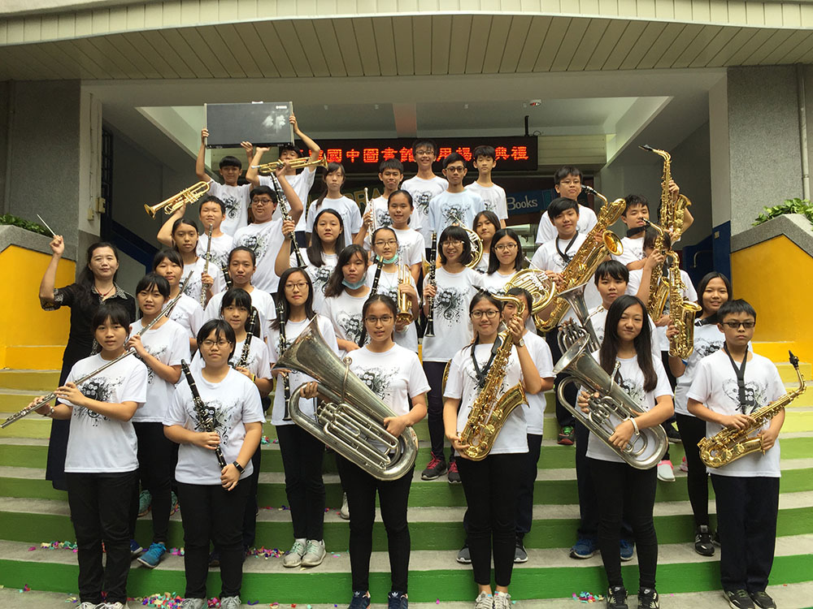

管樂馬拉松
日期：04月21日（六）
地點：中壢中正公園
韓國龜尾市金烏工業高等學校
金烏工業高等學校管樂團於1973年建校時同時創立，歷史悠久，自從創團以來積極參與各種演奏活動，通過多種形式的演出，不僅增添校園生活，且透過在龜尾市舉辦的各種文化、體育儀式的演出，也為社區貢獻一份力量，主要參與過的活動有:道民體育大會、慶北地方演出比賽、全國技能大會、頒獎儀式、大韓民國管樂表演大會等多項活動。

日本加賀市國中聯隊
加賀市位在日本石川縣，是個擁有1300年歷史的溫泉及歷史文化之城。「加賀市國中聯隊」是由加賀市6所中學管樂團的成員中，經過選拔而組成的。1999年成立以來，從2002年起每年均參與各式各樣的音樂會演出，如：加賀市的「かがふれあいコンサート」(譯：加賀親睦音樂會)、愛知縣安城市管樂嘉年華、金澤市的狂熱之日音樂會、2017桃園管樂嘉年華…等等。 本次成員，是為了桃園管樂嘉年華的演出，經過多次練習特別組成的。希望透過音樂，讓加賀市及桃園市，架起日本及臺灣友好關係的橋梁。

香港少青步操樂團
香港少青步操樂團成立於2003年，成立至今已逾十年。樂團曾多次參與海內及海外的大型演出及國際比賽；亦經常獲邀參與於香港舉辦的不同類型演出，樂團成立至今演出場次已逾500場。 2010年樂團前往泰國參與當地第一屆世界步操樂團錦標賽，獲得巡遊「銅牌獎」。此外，樂團更首度獲邀請於長州太平清醮中擔任表演嘉賓。同年，樂團繼2005及 2009年後，於香港步操及鼓號樂團協會主辦的「2010香港步操樂團公開賽」中再獲「金牌獎」。

仁和國中
仁和國中管樂團成立於民國92年，一開始是以學校基本典禮儀式伴奏及表演為主，後來逐漸發展成為學校的特色之一，學校並於102、104、106年全國音樂比賽中，奪得全國特優的最高榮譽，106年全國學生音樂比賽，仁和國中在銅管五重奏、木管五重奏、打擊重奏及管樂合奏等項目也都有優異表現。 因近年大環境不佳，管樂團的組成與延續愈發困難，所幸學校有一群熱情的教師出錢出力，希望透過管樂團的學習提供學生更精采的國中生活經驗。管樂團可以養成學生自律及掌握時間的習慣、並讓學生學習聆聽他人聲音；同時音樂能夠療癒人心，所以也安排樂團學生到教養院作社會公益服務，讓學生學習付出及服務他人。

東興國中
東興國中管樂團創立於2013年，管樂團以「學術雙修，品格第一」為宗旨培養學生發展全人教育。讓同學們建立正當的嗜好及音樂專長，並學得快樂、學得正確，使更多愛好音樂的學生，經由優質的訓練，從中獲得正確的練習方法與合奏觀念，使同學們可以培養出興趣及技能，並在團隊中學習人際互動與發揮團隊精神。 管樂團平時利用社團時間、課餘時間、週末假日及寒暑假進行分部練習與團體合奏，在學校負責各種儀典、校內活動、歲末聯歡會等演奏並參加校外活動展演，學習內容多元豐富曲目不侷限於古典，流行、通俗亦有涉略，深受學生及家長好評。並代表學校參加學生音樂比賽，歷年來皆榮獲佳績，但本團不以此滿足反而更加精進各聲部技巧及合奏協調性。期許東興國中管樂團持續成長，讓校內四處充滿悠揚樂音，同學們能在優美樂音中快樂學習，開創更豐富多元的國中生涯。

公埔國小
本校自95學年度起，推展兒童管樂團成為全校性的音樂課程，達到「一人ㄧ樂器」的目標。 目前從三年級開始實施管樂初探課程，四年級除了精熟個人技巧更要學習分部合奏默契，五、六年級則為音樂比賽及受邀表演的主力。經過多年耕耘，管樂團成績斐然，在97學年度首次參加桃園縣學生音樂比賽即獲得優等之佳績，97~105學年度也榮獲特優、優等之成績。其中99、100學年更代表桃園縣參加全國學生音樂比賽，榮獲優等獎，讓孩子們的自信心與能力皆大幅提昇。 近年來管樂團也受邀到私人或公辦活動演出，皆深獲好評，而學生們經過管樂團的淬煉，不但提昇了音樂素養，更培養了與人合作的積極態度以及穩定大方的個人特質，公埔將持續灌溉管樂的藝術與人文課程，讓音樂的種子在孩子心中發芽茁壯。

管樂馬拉松
日期：04月22日（日）
地點：中壢中正公園
葉樹涵銅管五重奏
葉樹涵銅管五重奏成立於1986年。在短短的數年間，已經成為國內頂級的表演團體。本團是由五位聞名全國的銅管樂手所組成，他們五位來自不同的音樂教育背景，但卻創造了和諧的演奏風格，以廣泛的曲目及獨特、平易近人的演出方式，深得愛樂人的喜愛。葉樹涵銅管五重奏亦多次巡迴世界各地演奏，足跡遠佈美國、日本、香港與中國大陸等地，成功地表現出「銅管樂大使的形象」。得獎經歷1990年出版的第一張演奏專輯唱片[五個驚歎號]獲得金曲獎 葉樹涵銅管五重奏樂團是第一個獲邀總統府介壽館音樂會演出的銅管室內樂團體，1999年並獲音樂時代雜誌評選為國內最受歡迎的室內樂演出團體。近年來多活躍於海內外各大音樂節慶演出，並多次參與文建會藝文下鄉活動，對於推廣銅管五重奏演出不遺餘力。在葉樹涵銅管五重奏慶祝成立20周年，舉辦「號兵寰宇」系列音樂會巡迴台灣各地演出。

龍星國小
龍星國小管樂團成立於民國91年4月，學校設有管樂團專屬練習室一間，歷年來聘請桃園交響管樂團團長陳榮昇老師及陳玟蓉老師指導合奏，近年聘請龍潭愛樂管樂團團長張鴻宇老師指導合奏、分部，另聘分部老師指導打擊、低音部、薩克斯風、法國號、長笛、單簧管、長號及小號等八個分部的吹奏技巧。樂團下設小打擊班，專收一、二年級的學生，提前培養管樂團人才。 目前團員39人，桃園交響管樂團帶領的基礎下，經由龍潭愛樂團長張老師及校內音樂老師用心的指導、學童們努力的學習，已具規模與聲名，常受邀於本鄉或其他鄉鎮各項活動中表演，演出約有60餘場次的經驗，並連續四年以優越的成績進入全國音樂比賽，並獲得佳績，是龍潭地區培育音樂人才的重重搖籃，且為龍潭區唯一最具水準的國小管樂團隊。

大溪高中
大溪高中管樂社，簡稱「溪管」，於2013年創立，至今已邁入第五個年頭，在校內為多元藝術性的社團，在學校的指導下，多次參與校內與大溪在地的音樂演出，並在音樂比賽中榮獲佳績，並為校爭取榮譽。本校樂團是由一群喜愛音樂的學生們所組成，團員們之間有著很深的羈絆互相扶持，並積極讓樂團往前邁進並持續經營下去。 樂團有著年輕活力的力量持續發展，藉由音樂的力量來傳遞團員喜愛音樂的熱情，帶領著台下的聆聽者進入音樂無窮無盡美妙廣大無盡的世界。 樂團不只豐富了我們的高中生活，更重要的是，音樂讓我們學習到團隊合作和做事的態度，經過重重的練習，希望藉著這場演出，讓更多人知道我們讓大家喜愛音樂的奇幻魔力，並加入這個美好的大家庭裡，為音樂注入新血。

武陵高中
「武陵極致、必是管樂；武陵管樂、無遠弗屆。」自創社二十年來，我們一直貫徹著這十六字箴言，我們秉持著一貫的不懈精神，四處奔波，盡心竭智，終在全國學生音樂比賽大展鴻鵠之姿，尤其是近四年來在指揮 吳松庭老師的帶領下，都獲得特優前三之殊榮，今年更是大舉拿下全國特優第一名，武陵管樂猶如矗立嚴冬之中的寒梅，如此傲骨，如此堅強，「雪虐風號愈凜然，花中氣節最高堅」，披荊斬棘，乘風破浪，武陵管樂將無畏的迎接日後的挑戰。